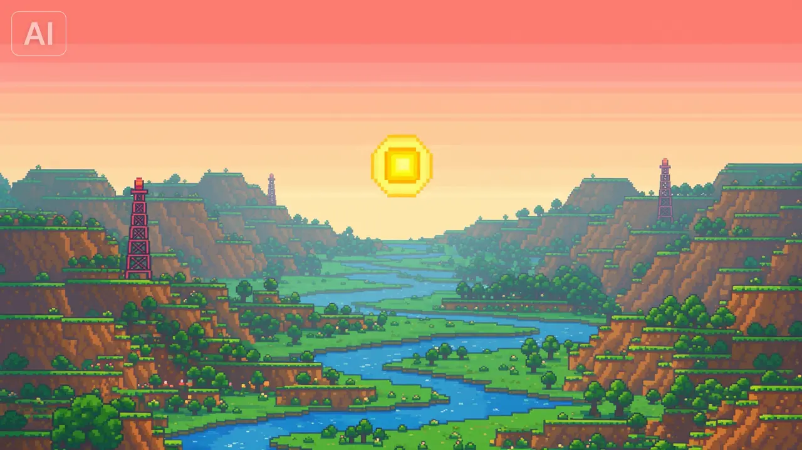

Grok Imagine / 原生能力
模拟模式：未配置 XAI_API_KEY，生成带水印的占位视频
视频工作室 / 控制台
写下你想看到的镜头，选择一条生成路径。每一次提交都会留下可回看的片格。
参数一屏可达，状态实时回传。画面完成后自动进入画廊。
30/45/60 秒即将推出 · 由一致性管线拼接
Grok 目前不能锁定结束帧。上传后不会让成片停在这张图上。
约 {{ estimate }}（以 xAI 账单为准）·grok-imagine-video
当前任务
{{ jobStatus }}{{ jobPct }}%
{{ jobId }}
{{ elapsed }}

输出画廊